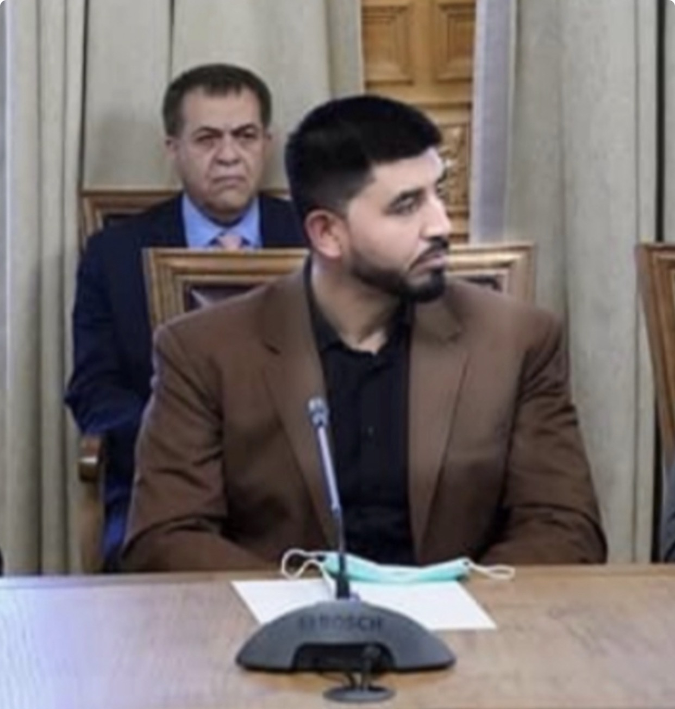
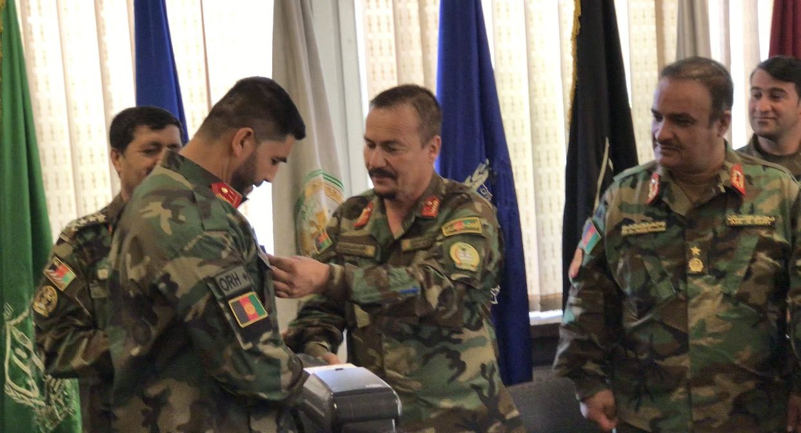

شفاخانه سردار محمد داوود خان
این شفاخانه که به نام شفاخانه ۴۰۰ بستر نیز شناخته میشود، یکی از محلهای کاری ذکرشده در سوابق حرفهای داکتر است.

معرفی حرفهای
Dr. Hemayatullah Nasrat Amarkhil
متخصص انستیزی و بیهوشی
کابل، افغانستان
درباره داکتر
داکتر حمایتالله نصرت امرخیل متخصص انستیزی و بیهوشی است که بر اساس معلومات ارائهشده برای این معرفینامه، حدود ۳۰ سال تجربه کاری در بخش انستیزی و بیهوشی دارد. فعالیتهای حرفهای او شامل کار در شفاخانه سردار محمد داوود خان (معروف به شفاخانه ۴۰۰ بستر) و همکاری سهماهه با سازمان صحی جهان (WHO) بوده است.
این صفحه بر اساس معلوماتی تهیه شده که برای ساخت وبسایت ارائه گردیده است. پیش از انتشار عمومی، تمام عنوانها، تاریخها، نام نهادها و سوابق باید توسط خود داکتر بررسی و تأیید شوند.
مسیر حرفهای
این شفاخانه که به نام شفاخانه ۴۰۰ بستر نیز شناخته میشود، یکی از محلهای کاری ذکرشده در سوابق حرفهای داکتر است.
همکاری حرفهای به مدت سه ماه، بر اساس معلومات ارائهشده.
محل فعالیت فعلی، بر اساس معلومات ارائهشده؛ لطفاً پیش از انتشار، این وضعیت را تأیید کنید.
تصاویر

شرح و شناسایی افراد و رویدادها بر اساس معلومات ارائهشده از سوی درخواستکننده است و پیش از انتشار نهایی باید توسط خود داکتر تأیید شود.
تحصیلات و تخصص
جزئیات نام رسمی پوهنتون، رشته، سال فراغت و اسناد تحصیلی باید پیش از انتشار توسط داکتر تأیید و تکمیل شود.
انستیزی و بیهوشی
ENGLISH PROFILE
Anesthesiology and Anesthesia Specialist
Dr. Hemayatullah Nasrat Amarkhil is an anesthesiology and anesthesia specialist based in Kabul, Afghanistan. According to the information provided for this profile, he has approximately 30 years of professional experience. His stated professional background includes work at Sardar Mohammad Daoud Khan Hospital (commonly known as the 400-Bed Hospital), a three-month collaboration with the World Health Organization (WHO), and work at several clinics in Kabul.
Military University. The official university name, qualification, field of study, and graduation year should be added after verification.
This English profile is a draft based on information supplied by the requester. All professional credentials and employment details should be verified and approved by the doctor before publication.